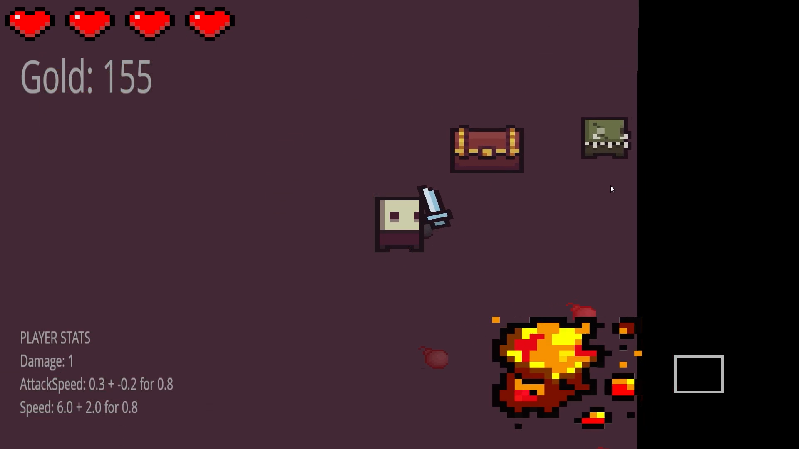

The Restless Tombs is a game that I made because I wanted to learn about OpenGL, game-engines/frameworks and too get better at c++.
The focus of this project was to learn how to render things using OpenGL. To learn this I used learnopengl.com as my main source.
I also picked up a book called 'game engine architecture second edition' and watched videos from TheCherno on youtube. With all this learning material I was able to create my own 2D game framework using c++ and OpenGl.
Date: 2017
The Restless Tombs
